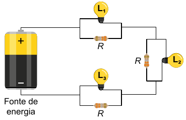
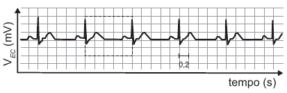
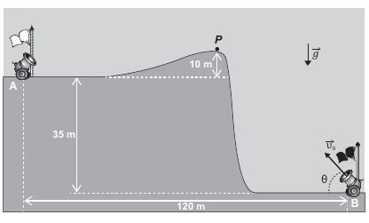

Física
29 de maio de 2024
\(*\) 1. (ENEM 2023) O circuito com três lâmpadas incandescentes idênticas, representado na figura, consiste em uma associação mista de resistores. Cada lâmpada (\(L_1\), \(L_2\), e \(L_3\)) é associada, em paralelo, a um resistor de resistência \(R\), formando um conjunto. Esses conjuntos são associados em série, tendo todas as lâmpadas o mesmo brilho quando ligadas à fonte de energia. Após vários dias em uso, apenas a lâmpada \(L_2\) queima, enquanto as demais permanecem acesas.

Em relação à situação em que todas as lâmpadas funcionam, após a queima de \(L_2\), os brilhos das lâmpadas serão:
\(**\) 2. (ENEM 2022) Uma lanterna funciona com três pilhas de resistência interna igual a \(0,5\,\Omega\) cada, ligadas em série. Quando posicionadas corretamente, devem acender a lâmpada incandescente de especificações \(4,5\,W\) e \(4,5\,V\). Cada pilha na posição correta gera uma f.e.m. (força eletromotriz) de \(1,5\,V\). Uma pessoa, ao trocar as pilhas da lanterna, comete o equívoco de inverter a posição de uma das pilhas. Considere que as pilhas mantêm contato independentemente da posição.
Com esse equívoco, qual é a intensidade de corrente que passa pela lâmpada ao se ligar a lanterna?
\(**\) 3. (ENEM 2021) Carros elétricos estão cada vez mais baratos, no entanto, os órgãos governamentais e a indústria se preocupam com o tempo de recarga das baterias, que é muito mais lento quando comparado ao tempo gasto para encher o tanque de combustível. Portanto, os usuários de transporte individual precisam se conscientizar dos ganhos ambientais dessa mudança e planejar com antecedência seus percursos, pensando em pausas necessárias para recargas.
Após realizar um percurso de \(110\,km\), um motorista pretende recarregar as baterias de seu carro elétrico, que tem um desempenho médio de \(5,0\,km/kWh\), usando um carregador ideal que opera a uma tensão de \(220\,V\) e é percorrido por uma corrente de \(20\,A\).
Quantas horas são necessárias para recarregar a energia utilizadas nesse percurso?
\(*\) 4. (ENEM 2023) Em uma indústria alimentícia, para produção de doce de leite, utiliza-se um tacho de parede oca com uma entrada para vapor de água a \(120\,°C\) e uma saída para água líquida em equilíbrio com o vapor a \(100\,°C\). Ao passar pela parte oca do tacho, o vapor de água transforma-se em líquido, liberando energia. A parede transfere essa energia para o interior do tacho, resultando na evaporação de água e consequente concentração do produto.
No processo de concentração do produto, é utilizada energia proveniente
\(**\) 5. (ENEM 2022) Em 2017, foi inaugurado, no estado da Bahia, o Parque Solar Lapa, composto por duas usinas (Bom Jesus da Lapa e Lapa) e capaz de gerar cerca de \(300\,GWh\) de energia por ano. Considere que cada usina apresente potência igual a \(75\,MW\), com o parque totalizando uma potência instalada de \(150\,MW\). Considere ainda que a irradiância solar média é de \(1500\,W/m^2\) e que a eficiência dos painéis é de \(20\%\).
Parque Solar Lapa entra em operação. Disponível em: www.canalbioenergia.com.br. Acesso em: 9 jun. 2022 (adaptado).
Nessas condições, a área total dos painéis solares que compõem o Parque Solar Lapa é mais próxima de:
\(*\) 6. (ENEM 2021) Na cidade de São Paulo, as ilhas de calor são responsáveis pela alteração da direção do fluxo da brisa marítima que deveria atingir a região de mananciais. Mas, ao cruzar a ilha de calor, a brisa marítima agora encontra um fluxo de ar vertical, que transfere para ela energia térmica absorvidas das superfícies quentes da cidade, deslocando-a para altas altitudes. Dessa maneira, há condensação e chuvas fortes no centro da cidade, em vez de na região de mananciais. A imagem apresenta os três subsistemas que trocam energia nesse fenômeno.
No processo de fortes chuvas no centro da cidade de São Paulo, há dois mecanismos dominantes de transferência de calor: entre o Sol e ilha de calor, e entre a ilha de calor e a brisa marítima.
Esses mecanismos são, respectivamente,
\(*\) 7. (ENEM 2023) É comum em viagens de avião sermos solicitados a desligar aparelhos cujo funcionamento envolva a emissão ou a recepção de ondas eletromagnéticas, como celulares. A justificativa dada para esse procedimento é, entre outras coisas, a necessidade de eliminar fontes de sinais eletromagnéticos que possam interferir nas comunicações, via rádio, dos pilotos com a torre de controle.
Essa interferência poderá ocorrer somente se as ondas emitidas pelo celular e as recebidas pelo rádio do avião
\(*\) 8. (ENEM 2022) Em 2002, um mecânico da cidade mineira de Uberaba (MG) teve uma ideia para economizar o consumo de energia elétrica e iluminar a própria casa num dia de sol. Para isso, ele utilizou garrafas plásticas PET com água e cloro, conforme ilustram as figuras. Cada garrafa foi fixada ao telhado de sua casa em um buraco com diâmetro igual ao da garrafa, muito maior que o comprimento de onda da luz. Nos últimos dois anos, sua ideia já alcançou diversas partes do mundo e deve atingir a marca de 1 milhão de casas utilizando a “luz engarrafada”.
Que fenômeno óptico explica o funcionamento da “luz engarrafada”?
\(*\) 9. (ENEM 2021) O eletrocardiograma é um exame cardíaco que mede a intensidade dos sinais elétricos advindos do coração. A imagem apresenta o resultado típico obtido em um paciente saudável e a intensidade do sinal (VEC) em função do tempo.

De acordo com o eletrocardiograma apresentado, qual foi o número de batimentos cardíacos por minuto desse paciente durante o exame?
\(**\) 10. (ENEM 2023) Uma concessionária é responsável por um trecho de \(480\) quilômetros de uma rodovia. Nesse trecho, foram construídas \(10\) praças de pedágio, onde funcionários recebem os pagamentos nas cabines de cobrança. Também existe o serviço automático, em que os veículos providos de um dispositivo passam por uma cancela, que se abre automaticamente, evitando filas e diminuindo o tempo de viagem. Segundo a concessionária, o tempo médio para efetuar a passagem em uma cabine é de \(3\) minutos, e as velocidades máximas permitidas na rodovia são \(100\,km/h\), para veículos leves, e \(80\,km/h\), para veículos de grande porte.
Considere um carro e um caminhão viajando, ambos com velocidades constantes e iguais às máximas permitidas, e que somente o caminhão tenha o serviço automático de cobrança. Comparado ao caminhão, quantos minutos a menos o carro leva para percorrer toda a rodovia?
\(*\) 11. (ENEM 2022) Um Buraco Negro é um corpo celeste que possui uma grande quantidade de matéria concentrada em uma pequena região do espaço, de modo que sua força gravitacional é tão grande que qualquer partícula fica aprisionada em sua superfície, inclusive a luz. O raio dessa região caracteriza uma superfície-limite, chamada de horizonte de eventos, da qual nada consegue escapar. Considere que o Sol foi instantaneamente substituído por um Buraco Negro com a mesma massa solar, de modo que o seu horizonte de eventos seja de aproximadamente \(3,0\,km\).
SCHWARZSCHILD, K. On the Gravitational Field of a Mass Point According to Einstein’s Theory. Disponível em: arxiv.org. Acesso em: 26 maio 2022 (adaptado).
Após a substituição descrita, o que aconteceria aos planetas do Sistema Solar?
\(***\) 12. (ENEM 2021) A figura foi extraída de um antigo jogo para computadores, chamado Bang! Bang!

No jogo, dois competidores controlam os canhões \(A\) e \(B\), disparando balas alternadamente com o objetivo de atingir o canhão do adversário; para isso, atribuem valores estimados para o módulo da velocidade inicial de disparo \(|\vec{v}_0|\) e para o ângulo de disparo (\(\theta\)).
Em determinado momento de uma partida, o competidor \(B\) deve disparar; ele sabe que a bala disparada anteriormente, \(\theta = 53°\), passou tangenciando o ponto \(P\).
No jogo, \(|\vec{g}|\) é igual a \(10\,m/s^2\). Considere \(sen\,53º = 0,8\), \(cos\,53º = 0,6\) e desprezível a ação de forças dissipativas.
Disponível em: http://mebdownloads.butzke.net.br. Acesso em: 18 abr. 2015 (adaptado).
Com base nas distâncias dadas e mantendo o último ângulo de disparo, qual deveria ser, aproximadamente, o menor valor de \(|\vec{v}_0|\) que permitiria ao disparo efetuado pelo canhão \(B\) atingir o canhão \(A\)?
\(**\) 13. (ENEM 2023) O bluetooth é uma tecnologia de comunicação sem fio, de curto alcance, presente em diferentes dispositivos eletrônicos de consumo. Ela permite que aparelhos eletrônicos diferentes se conectem e troquem dados entre si. No padrão bluetooth, denominado de Classe 2, as antenas transmitem sinais de potência igual a \(2,4\,mW\) e possibilitam conectar dois dispositivos distanciados até \(10\,m\). Considere que essas antenas se comportam como fontes puntiformes que emitem ondas eletromagnéticas esféricas e que a intensidade do sinal é calculada pela potência por unidade de área. Considere \(3\) como valor aproximado para \(\pi\).
Para que o sinal de bluetooth seja detectado pelas antenas, o valor mínimo de sua intensidade, em \(W/m^2\)?, e mais próximo de
\(*\) 14. (ENEM 2022) No processo de captação da luz pelo olho para a formação de imagens estão envolvidas duas estruturas celulares: os cones e os bastonetes. Os cones são sensíveis à energia dos fótons, e os bastonetes, à quantidade de fótons incidentes. A energia dos fótons que compõem os raios luminosos está associada à sua frequência, e a intensidade, ao número de fótons incidentes.
Um animal que tem bastonetes mais sensíveis irá
\(**\) 15. (ENEM 2021) No outono, as folhas de árvores mudam de cor, de verde para tons de amarelo, castanho, laranja e vermelho. A cor de verde das folhas deve-se ao pigmento clorofila. Nas plantas de folhas caducas, a produção de clorofila diminui e o tom verde desvanece, permitindo assim que outros pigmentos, como o caroteno, de coloração amarelo-alaranjado, e a antocianina, de tons avermelhados, passem a dominar a tonalidade das folhas. A coloração observada se dá em função da interação desses pigmentos com a radiação solar.
Conforme apresentado no espectro de absorção, as moléculas de clorofila absorvem a radiação solar nas regiões do azul e do vermelho, assim a luz refletida pelas folhas tem falta desses dois tons e as vemos na cor verde. Já as antocianinas absorvem a luz desde o azul até o verde. Nesse caso, a luz refletida pelas folhas que contêm antocianinas aparece conforme as cores complementares, ou seja, vermelho-alaranjado.
Em qual faixa do espectro visível os carotenos absorvem majoritariamente?